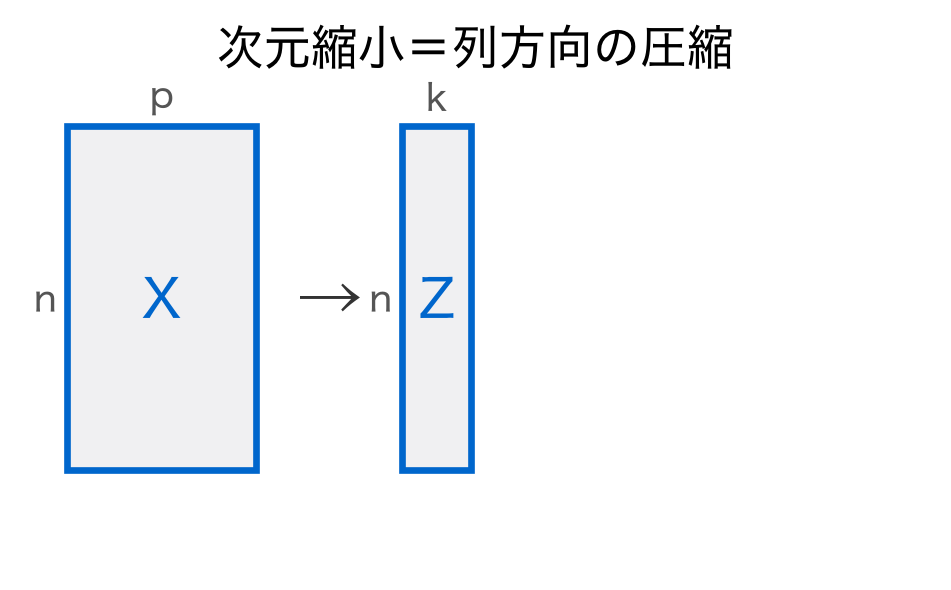
第11回 k-means
G と C を交互に解き、初期値を変えてやり直す
第I部 理論
前回の残り：1回で解けたか
| 近似 | 1回で解けたか | |
|---|---|---|
| 主成分分析 | \mathbf F\mathbf A^\top（\mathbf F は連続な値） | 解けた（特異値分解） |
| k-means | \mathbf G\mathbf C（\mathbf G は0/1） | ？ |
\mathbf G の各行は、1が1つだけで残りは0。
前回の問い：行を群に分けると
第8回で書いた目的関数。
\min_{\mathbf G,\mathbf C}\ \lVert\mathbf X-\mathbf G\mathbf C\rVert_F^2 \qquad\text{（}\mathbf G\text{ の各行は1が1つ）}
この式を、実際に解く回。
場面①：卸売の顧客440件
ポルトガルの卸売業者の顧客 440 件。6 品目の年間購入額が記録されている。描いたのはそのうち2品目。
場面②：1点が1件の顧客
1点がデータ行列の1行。この顧客は食料品を 5,160、生鮮を 8,533 買った。
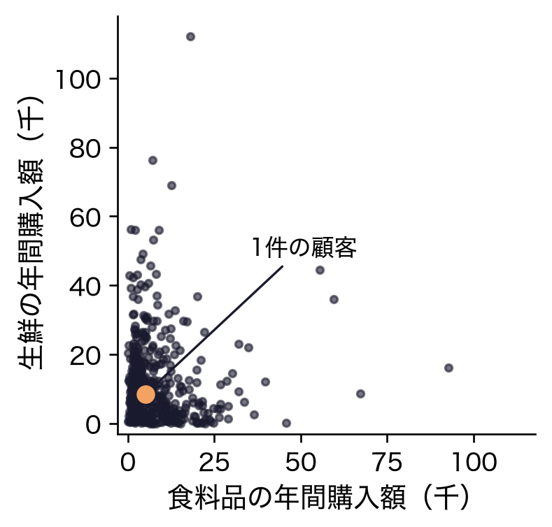
場面③：似た買い方の客
飲食店もあれば小売店もある。近い点どうしは買い方が似ている。似た顧客を群にまとめたい。

今回の問い
行を群に分けるとき、0/1のGと代表点Cをどう求めるか？
今回覚える言葉
- メンバーシップ関数
- メンバーシップ行列
- セントロイド（代表点）
- 局所解
- ランダムスタート
答えの見通し：交互に解く
- \mathbf C を固定：各行を最も近い代表点の群に入れる
- \mathbf G を固定：\hat{\mathbf C}=(\mathbf G^\top\mathbf G)^{-1}\mathbf G^\top\mathbf X、つまり群ごとの平均
- 交互に繰り返す（第9回と同じ骨組み）。着く先は初期値しだいなので、やり直して最良を採る
次の問い：何で近似するか
- 卸売の顧客は440点。分けた結果を目で追うには多い
- 手で追える小さな例で、群に分けて近似する意味を見る
- ここでは人工的なデータを使う（博士論文の図1.5と同じ形）
群に分けて近似するとは、どういうことか。
モデル①：100個体・2変数
100個体・2変数の人工データ。1点が1個体（データ行列の1行）。
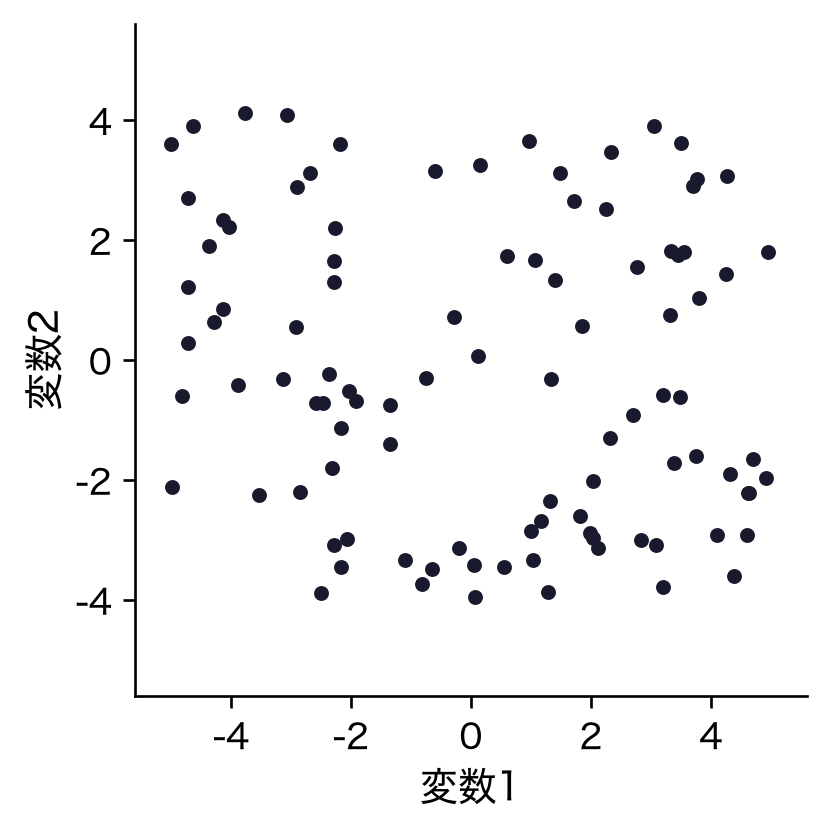
モデル②：k=3の代表点
k=3 個の代表点（■）を置く。代表点はセントロイドとも呼ぶ。座標は論文の値。
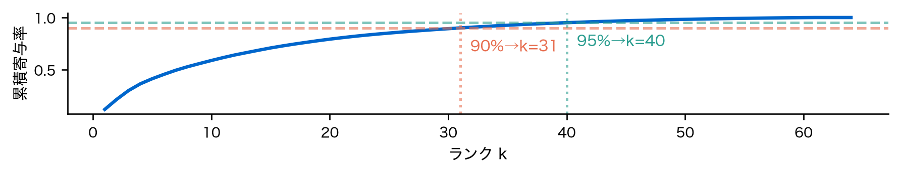
モデル③：各個体を1つの群に
各個体を、どれか1つの群（クラスター）に入れる。色が入れた群。
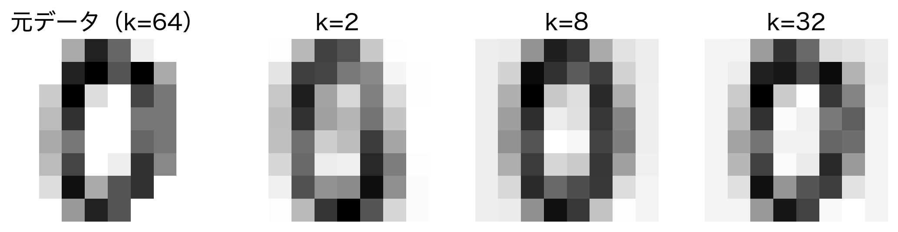
モデル④：群の■で近似する
各個体を、入れた群の■で近似する。誤差は点から■への線。
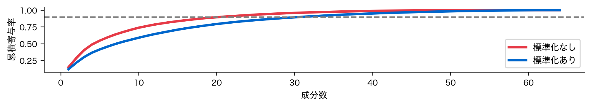
行列で見る①：XとG
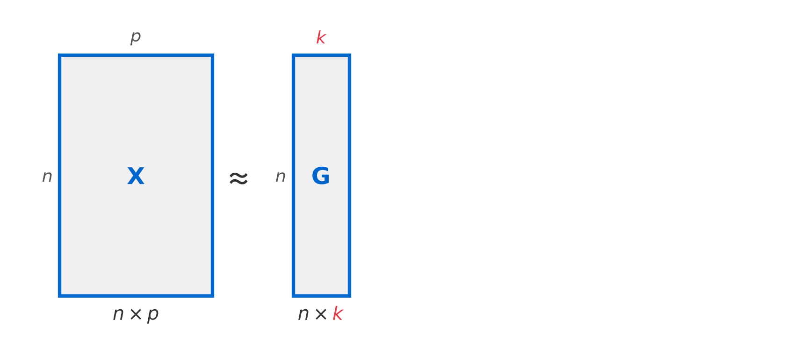
\mathbf X は n\times p。\mathbf G（n\times k）は各個体の所属で、各行に1が1つだけ立つ。
行列で見る②：代表点C
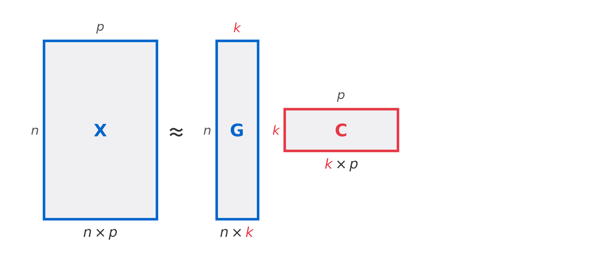
\mathbf C（k\times p）は代表点を行に並べたもの。\mathbf G の列と \mathbf C の行が k でそろう（赤）。
行列で見る③：GCの1行
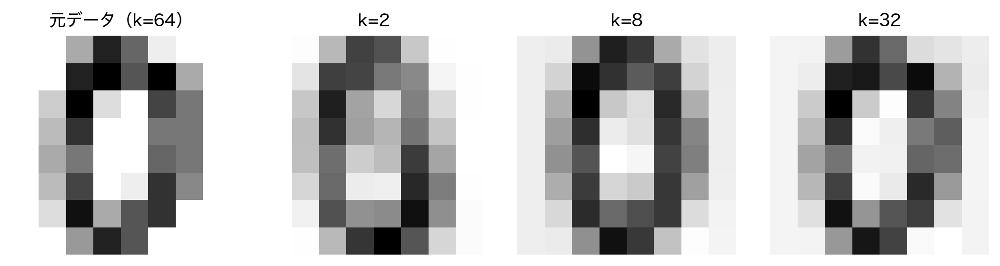
\mathbf G の第 i 行は、1が立った列だけで \mathbf C の1行を拾う。\mathbf G\mathbf C の第 i 行は、個体 i の群の代表点。
モデル：X＝GC＋E
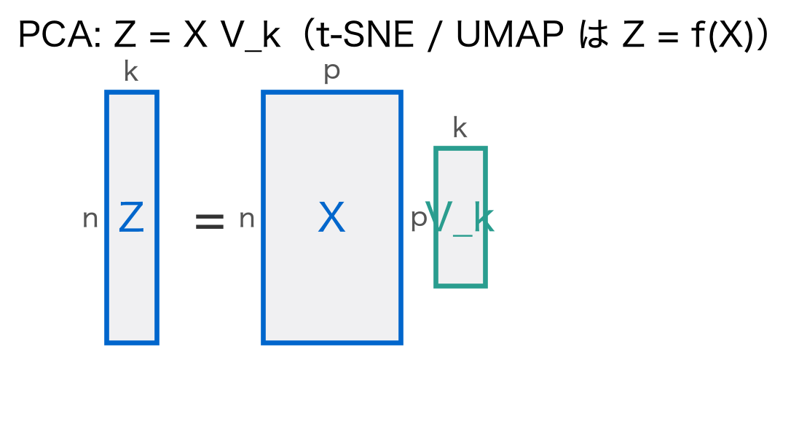
誤差 \mathbf E を足すと等号。第1回の「データ＝モデル＋誤差」と同じ形。
次の問い：誤差をどう足すか
- 近似 \mathbf G\mathbf C の形は決まった
- 誤差は、点から自分の群の■への線
- 「どの群に入ったか」を、式の中でどう書くか
所属を数で表し、誤差の二乗和を書く。
メンバーシップ関数
g_{iq}=\begin{cases}1 & \text{個体 } i \text{ がクラスター } q \text{ に所属する}\\ 0 & \text{所属しない}\end{cases}
所属を表す関数。第8回の q(i) を、0/1の数 g_{iq} で書き直した。
制約：1つの群にだけ
\sum_{q=1}^{k}g_{iq}=1\qquad(i=1,\dots,n)
1つの個体が複数の群に所属することは許さない。各行で1になる q はちょうど1つ。
目的関数①：1マスずつ
J=\sum_{i=1}^{n}\sum_{q=1}^{k}g_{iq}\sum_{j=1}^{p}\bigl(x_{ij}-c_{qj}\bigr)^2
1マス x_{ij} を、所属する群の代表点の成分 c_{qj} で近似した誤差の二乗。
目的関数①：0の項は消える
J=\sum_{i=1}^{n}\sum_{q=1}^{k}g_{iq}\sum_{j=1}^{p}\bigl(x_{ij}-c_{qj}\bigr)^2
g_{iq}=0 の項は消え、所属する群との差だけが残る。第8回の \sum\sum(x_{ij}-c_{q(i)j})^2 と同じ値。
目的関数②：ベクトルで
J=\sum_{i=1}^{n}\sum_{q=1}^{k}g_{iq}\,\lVert\tilde{\boldsymbol x}_i-\boldsymbol c_q\rVert_2^2
内側の j の和は、個体 i と代表点 q のユークリッド距離の二乗（第1回）。p=1 なら①に戻る。
目的関数③：行列で
J(\mathbf G,\mathbf C)=\lVert\mathbf X-\mathbf G\mathbf C\rVert_F^2
(\mathbf G\mathbf C)_{ij}=\sum_qg_{iq}c_{qj} では、1が立った q の c_{qj} だけが残る。第8回の目的関数④。
メンバーシップ行列の例
\mathbf G=\begin{bmatrix}1&0&0\\1&0&0\\1&0&0\\0&1&0\\0&1&0\\0&0&1\\0&0&1\end{bmatrix}
n=7、k=3。個体1〜3がクラスター1、個体4・5がクラスター2、個体6・7がクラスター3。
制約を行列で：G1＝1
\mathbf G=\begin{bmatrix}1&0&0\\1&0&0\\1&0&0\\0&1&0\\0&1&0\\0&0&1\\0&0&1\end{bmatrix}, \qquad \mathbf G\mathbf 1_k=\mathbf 1_n
制約は各行の和が1。\mathbf 1_k は1を k 個並べたベクトル。
次の問い：どう解くか
- 目的関数 \lVert\mathbf X-\mathbf G\mathbf C\rVert_F^2 は決まった
- 未知は \mathbf G と \mathbf C の2つ
- 回帰のように、微分して0とおけば1回で解けるか
解き方①：未知は2つの積
| 主成分分析（第9・10回） | k-means | |
|---|---|---|
| 未知 | \mathbf F と \mathbf A | \mathbf G と \mathbf C の2つ |
| 値の取り方 | どちらも連続な値 | \mathbf G は0/1、\mathbf C は連続な値 |
主成分分析と同じく、未知は2つの行列の積。違うのは \mathbf G が0/1であること。
解き方②：Gでは微分できない
| 主成分分析（第9・10回） | k-means | |
|---|---|---|
| 未知 | \mathbf F と \mathbf A | \mathbf G と \mathbf C の2つ |
| 値の取り方 | どちらも連続な値 | \mathbf G は0/1、\mathbf C は連続な値 |
| 微分 | できる | \mathbf G ではできない（分け方は k^n 通り） |
\mathbf G は0と1の間を動けない。微分して0とおく方法が使えない。
解き方③：全部は試せない
k^n=2^{440}\approx10^{132}
卸売の顧客 440 件を2つに分けるだけで、分け方はこれだけある。すべて試すことはできない。
交互最小二乗法①：Gの更新
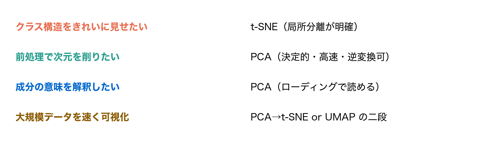
初期値の \mathbf C を決め、\mathbf C を固定して \mathbf G を更新する。
交互最小二乗法②：Cの更新
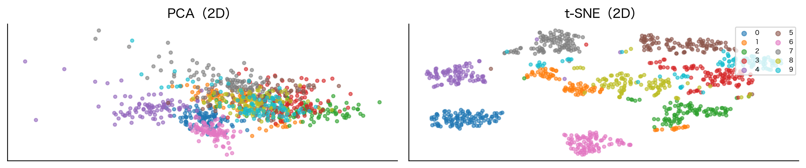
次に、いま決めた \mathbf G を固定して \mathbf C を更新する。
交互最小二乗法③：繰り返す
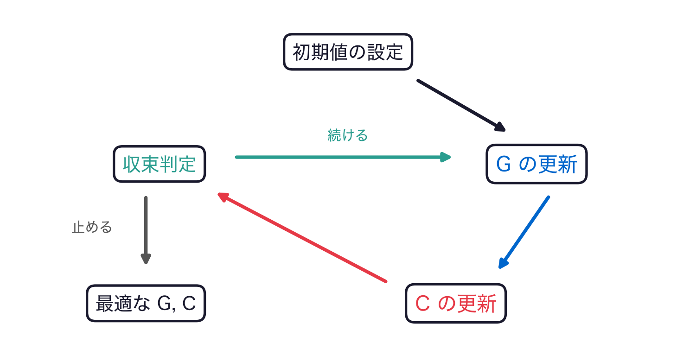
第9回と同じ骨組み。片方を固定すれば、残りは解ける。動かなくなったら止める。
次の問い：更新に何が要るか
- \mathbf G の更新は、どの列に1を置くかの場合分け
- \mathbf C の更新は、\mathbf G を固定して微分する
- 微分の答えには、\mathbf G^\top\mathbf G と \mathbf G^\top\mathbf X が出てくる
この2つの積が何を数えているかを、先に見ておく。
道具①：GᵀGを箱で
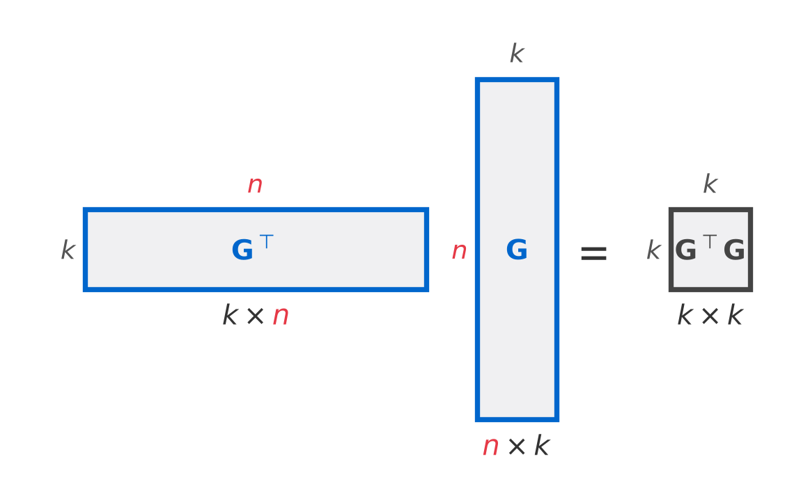
k\times n と n\times k の積で、n がそろう（赤）。答えは k\times k の小さな正方行列。
道具①：GᵀGは群の大きさ
\mathbf G^\top\mathbf G=\begin{bmatrix}n_1&&\\&\ddots&\\&&n_k\end{bmatrix},\qquad n_q=\sum_{i=1}^{n}g_{iq}
(q,l) 成分は \sum_ig_{iq}g_{il}。1つの行に1は1つなので、q\neq l なら0。7行の例では \operatorname{diag}(3,2,2)。
道具②：逆行列は対角の逆数
(\mathbf G^\top\mathbf G)^{-1}=\operatorname{diag}\Bigl(\frac1{n_1},\dots,\frac1{n_k}\Bigr)
どの群にも1個体以上いれば、逆行列は対角を逆数にするだけ。空の群があると対角に0が出て、正則でない（第3回）。
道具③：GᵀXを箱で
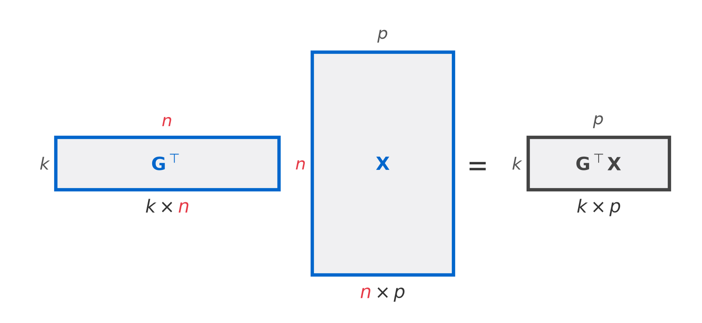
答えは k\times p。\mathbf C と同じ大きさになる。
道具③：GᵀXは群ごとの和
(\mathbf G^\top\mathbf X)_{qj}=\sum_{i=1}^{n}g_{iq}\,x_{ij}
第 q 行は、群 q に入った行を足したもの \sum_ig_{iq}\tilde{\boldsymbol x}_i^\top。
道具④：トレースの偏微分
\frac{\partial\operatorname{tr}(\mathbf B^\top\mathbf M)}{\partial\mathbf B}=\mathbf M,\qquad \frac{\partial\operatorname{tr}(\mathbf B^\top\mathbf S\mathbf B)}{\partial\mathbf B}=2\mathbf S\mathbf B\quad(\mathbf S\text{ は対称})
1つ目は第9回。2つ目は 1\times1 なら \frac{d}{db}(sb^2)=2sb。\mathbf S=\mathbf I で第9回の 2\mathbf B。
道具がそろった
- \mathbf G^\top\mathbf G：群の人数を対角に並べたもの。逆行列は対角の逆数
- \mathbf G^\top\mathbf X：群ごとの行の和
- トレースの偏微分：行列のまま微分する
この3つで、\mathbf C の更新を行列のまま書ける。
Gの更新①：個体50に注目
\mathbf C を固定する。博士論文の図1.6にならい、個体50（橙）だけを見る。
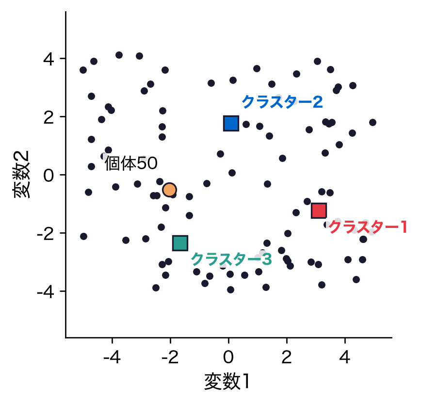
Gの更新②：3つの距離
個体50と3つの代表点の距離の二乗。クラスター3が最も近い。
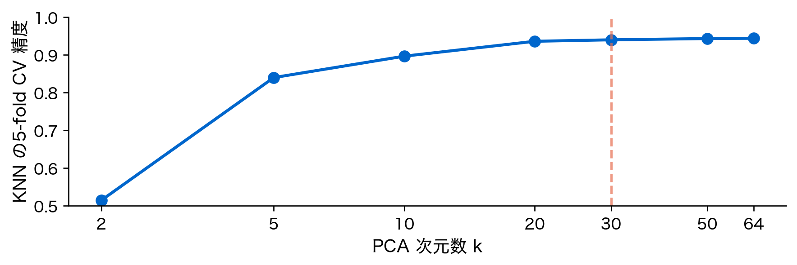
Gの更新③：1を置く場所を選ぶ
\sum_{q=1}^{3}g_{50,q}\,\lVert\tilde{\boldsymbol x}_{50}-\boldsymbol c_q\rVert_2^2=\lVert\tilde{\boldsymbol x}_{50}-\boldsymbol c_3\rVert_2^2 \qquad(g_{50,3}=1)
選べるのはどの列に1を置くかだけ。微分は使えず、場合分けで決める。最も小さい距離の列に置く。
Gの更新④：行ごとに選ぶ
\hat g_{iq}=\begin{cases}1 & \bigl(q=\operatorname*{argmin}_{1\le l\le k}\lVert\tilde{\boldsymbol x}_i-\boldsymbol c_l\rVert_2^2\bigr)\\ 0 & (\text{それ以外})\end{cases}
J=\sum_i\bigl(\sum_qg_{iq}d_{iq}\bigr) は行ごとの和。各行を別々に最小にすればよい。
Gの更新⑤：全員を塗り分ける
100個体すべてを、最も近い■の群に入れた。これで \mathbf G の更新が1回終わる。
Gの更新⑥：距離を行列で
\mathbf D=\boldsymbol a\mathbf 1_k^\top-2\mathbf X\mathbf C^\top+\mathbf 1_n\boldsymbol b^\top, \qquad a_i=\lVert\tilde{\boldsymbol x}_i\rVert_2^2,\ \ b_q=\lVert\boldsymbol c_q\rVert_2^2
d_{iq}=\lVert\tilde{\boldsymbol x}_i\rVert_2^2-2\tilde{\boldsymbol x}_i^\top\boldsymbol c_q+\lVert\boldsymbol c_q\rVert_2^2 を n\times k に並べた。\mathbf D の各行で最小の列に1。
Gの更新⑦：主な計算はXCᵀ
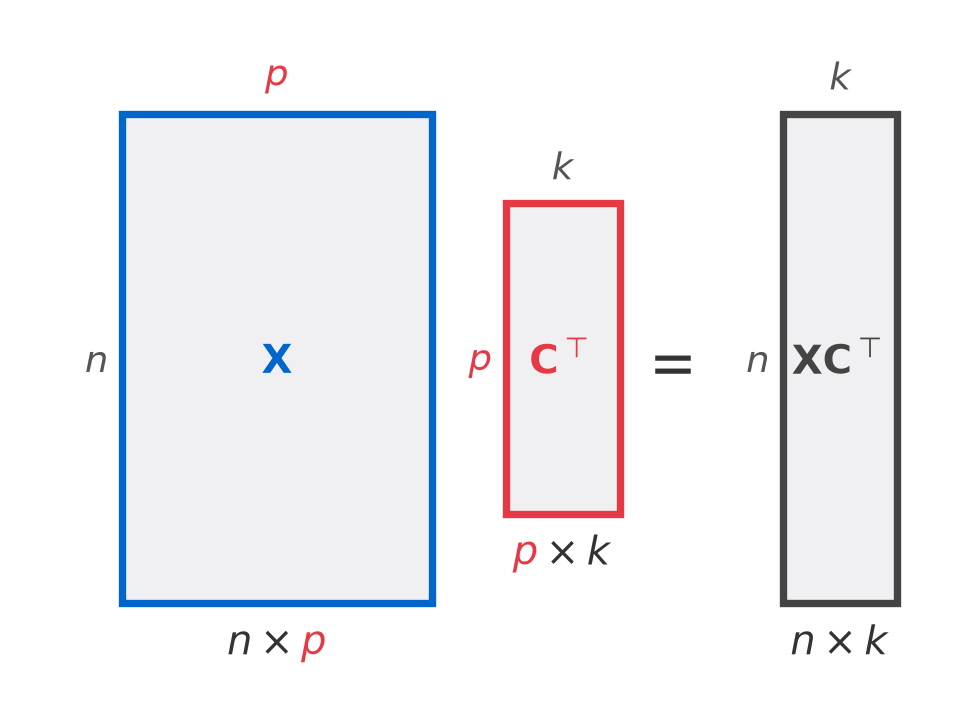
\mathbf D は \mathbf G と同じ n\times k。行列の積を1回して、各行で最小の列を探す。
Cの更新①：Gを固定する
今度は色（\mathbf G）を固定する。各群の■をどこに置けば、線の二乗和が最も小さいか。
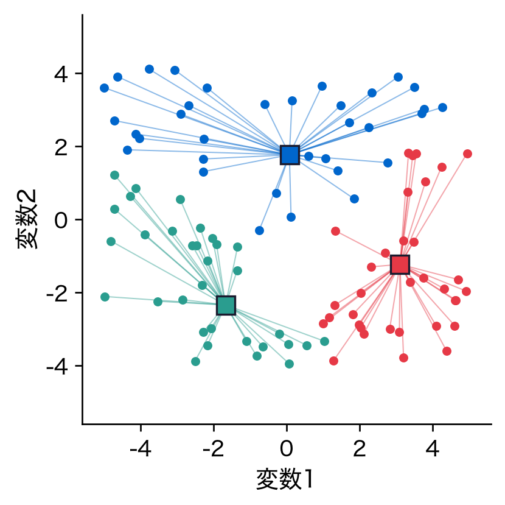
Cの更新②：1変数なら微分
\begin{aligned} &\frac{d}{dc_q}\sum_{i=1}^{n}g_{iq}\bigl(x_i-c_q\bigr)^2=-2\sum_{i=1}^{n}g_{iq}\bigl(x_i-c_q\bigr)=0\\ \Longrightarrow\quad&\hat c_q=\frac{\sum_ig_{iq}x_i}{\sum_ig_{iq}} \end{aligned}
p=1。\mathbf G を固定すると、群 q の項は c_q だけの放物線。答えは群 q の平均。
Cの更新③：勾配を0に
\begin{aligned} \frac{\partial}{\partial\boldsymbol c_q}\sum_{i=1}^{n}g_{iq}\lVert\tilde{\boldsymbol x}_i-\boldsymbol c_q\rVert_2^2 &=\sum_{i=1}^{n}g_{iq}\bigl(-2\tilde{\boldsymbol x}_i+2\boldsymbol c_q\bigr)\\ &=-2\sum_{i}g_{iq}\tilde{\boldsymbol x}_i+2\boldsymbol c_q\sum_{i}g_{iq}=\boldsymbol 0_p \end{aligned}
\hat{\boldsymbol c}_q=\sum_ig_{iq}\tilde{\boldsymbol x}_i\big/\sum_ig_{iq}。p=1 で②に戻る。
Cの更新④：トレースで展開
\begin{aligned} J(\mathbf C\mid\mathbf G)&=\operatorname{tr}\bigl((\mathbf X-\mathbf G\mathbf C)^\top(\mathbf X-\mathbf G\mathbf C)\bigr)\\ &=\operatorname{tr}(\mathbf X^\top\mathbf X)-2\operatorname{tr}(\mathbf C^\top\mathbf G^\top\mathbf X)+\operatorname{tr}(\mathbf C^\top\mathbf G^\top\mathbf G\mathbf C) \end{aligned}
行列のまま書く。二乗和をトレースで表す（第9回）。\mathbf C を含むのは第2項と第3項。
Cの更新⑤：正規方程式
\begin{aligned} &\frac{\partial J}{\partial\mathbf C}=-2\mathbf G^\top\mathbf X+2\mathbf G^\top\mathbf G\,\mathbf C=\mathbf O\\ \Longrightarrow\quad&\mathbf G^\top\mathbf G\,\mathbf C=\mathbf G^\top\mathbf X \end{aligned}
道具④。第1回の \mathbf X^\top\mathbf X\boldsymbol\beta=\mathbf X^\top\boldsymbol y の \mathbf X を \mathbf G に、\boldsymbol y を \mathbf X に替えた形。
Cの更新⑥：群の平均
\hat{\mathbf C}=(\mathbf G^\top\mathbf G)^{-1}\mathbf G^\top\mathbf X =\operatorname{diag}\Bigl(\frac1{n_1},\dots,\frac1{n_k}\Bigr)\mathbf G^\top\mathbf X
道具②③。第 q 行は群 q の和を n_q で割ったもの。③と同じ群の平均。
Cの更新⑦：■が群の真ん中へ
白丸が更新の前の■。\mathbf C を1回更新すると、■は自分の群の点の平均へ動く。
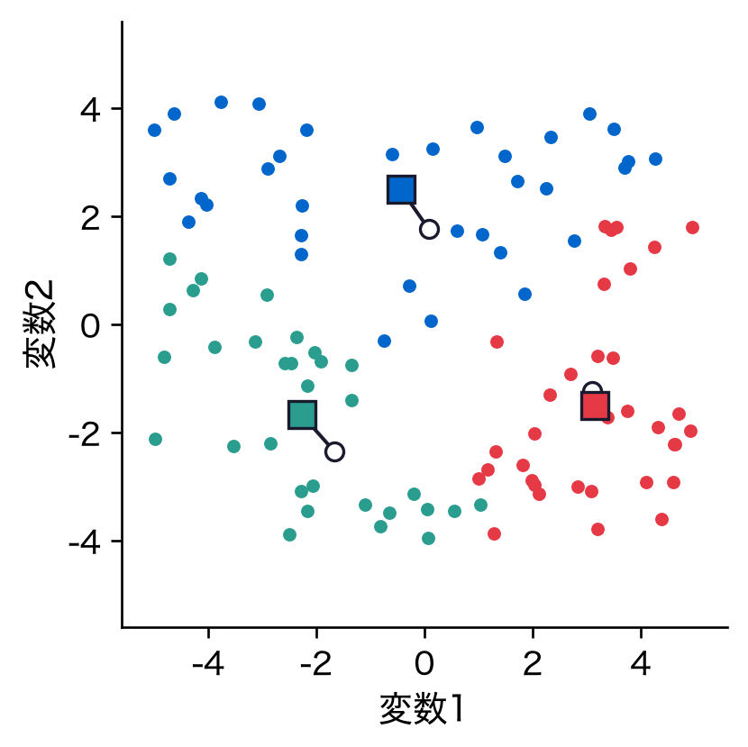
アルゴリズム：交互最小二乗法
- 用意する：データ行列 \mathbf X（n\times p、列の目盛りをそろえたもの）と、群の数 k
- 初期値：\mathbf X の行から k 行を無作為に選び、\mathbf C（k\times p）とする
- Gの更新：\mathbf D=\boldsymbol a\mathbf 1_k^\top-2\mathbf X\mathbf C^\top+\mathbf 1_n\boldsymbol b^\top。各行で最小の列に1、残りは0
- Cの更新：\mathbf C\leftarrow(\mathbf G^\top\mathbf G)^{-1}\mathbf G^\top\mathbf X（群ごとの平均）
- 収束判定：\mathbf G が前回と同じなら止める。そうでなければ3へ
- ランダムスタート：2〜5を R 通りの初期値で行い、J=\lVert\mathbf X-\mathbf G\mathbf C\rVert_F^2 が最も小さい答えを採る
1回の反復でする計算
| 段 | 計算 | 大きさ |
|---|---|---|
| Gの更新 | \mathbf X\mathbf C^\top と、各行の最小の列 | n\times k |
| Cの更新 | \mathbf G^\top\mathbf X と、対角 \mathbf G^\top\mathbf G の逆数 | k\times p |
第9回の特異値分解が場合分けに、\hat{\mathbf F}=\mathbf X\mathbf A が群ごとの平均に替わった。
次の問い：回すと何が起きるか
- 2つの更新式と、計算の手順がそろった
- 100個体の人工データで、実際に回してみる
- 初期値は、論文の3つの代表点
J はどう動き、どこで止まるか。
帰結①：Jは毎回下がる
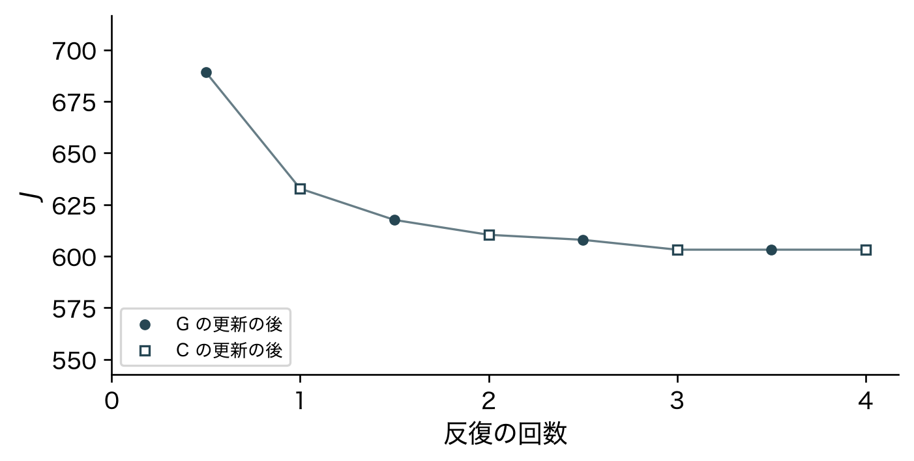
丸は \mathbf G の更新の後、四角は \mathbf C の更新の後。どちらの更新でも J は上がらない。
帰結②：■が動いて止まる
黒い線が■の道筋（白丸が初期値）。4 回で \mathbf G が変わらなくなり、止まった。J = 603.2。

帰結③：有限回で止まる
分け方は高々 k^n 通りで有限。J が下がり続ける限り、同じ \mathbf G には戻らない。だから必ず止まる。
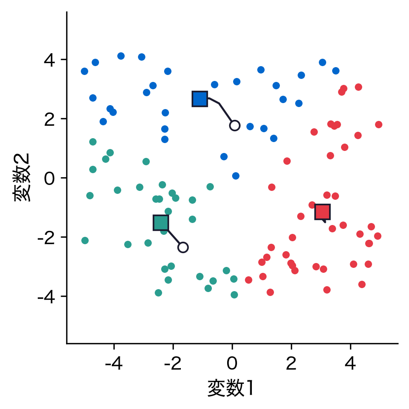
帰結④：別の初期値から
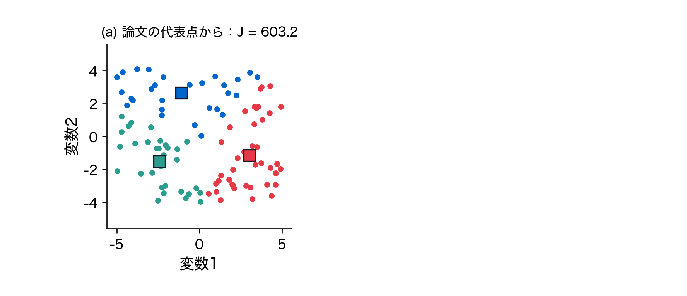
左の (a) は、論文の代表点から着いた答え。同じデータを、別の初期値（\mathbf X の行から3行）から回す。
帰結⑤：着く先が変わる

どちらもそこから動かない（更新しても \mathbf G が変わらない）。しかし J は (b) のほうが小さい。
帰結⑥：局所解
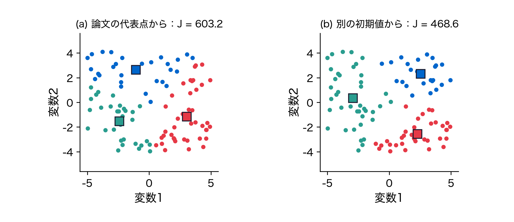
左の (a) のように、どちらの更新でも動かないのに最小ではない点を局所解と呼ぶ。
帰結⑦：所属が違う個体

番号を付け替えてそろえても（第8回）、(a) と (b) で所属が違う個体が 34 個ある。
帰結⑧：300通りの初期値

\mathbf X の行から3行を選ぶ初期値を 300 通り。最小の J に着いたのは 191 回。
帰結⑨：ランダムスタート
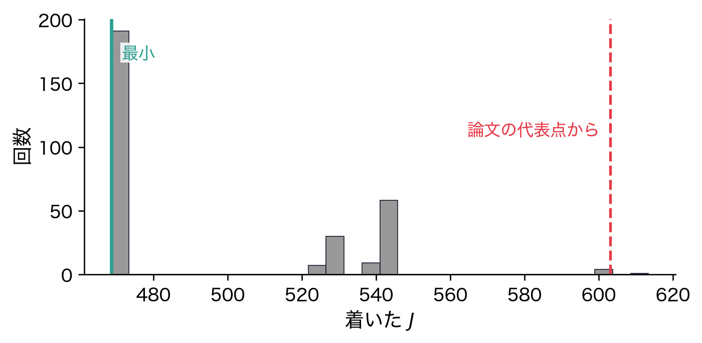
何通りかの初期値から解き、J が最も小さい答えを採る。これをランダムスタートと呼ぶ。
帰結⑩：何回やり直すか
| 初期値の数 R | 1 | 2 | 3 | 5 |
|---|---|---|---|---|
| 最小に1回は着く見込み | 63.7% | 86.8% | 95.2% | 99.4% |
1回で最小に着く割合を \theta とすると、R 回のうち1回は着く見込みは 1-(1-\theta)^R。この例では \theta = 0.64。
帰結⑪：境目は直線
\begin{aligned} &\lVert\tilde{\boldsymbol x}-\boldsymbol c_1\rVert_2^2\\ &=\lVert\tilde{\boldsymbol x}-\boldsymbol c_2\rVert_2^2 \end{aligned}
は \tilde{\boldsymbol x} の1次式。境目は垂直二等分線。

帰結⑫：Jは列ごとの和
J=\sum_{j=1}^{p}\ \sum_{i=1}^{n}\bigl(x_{ij}-c_{q(i)j}\bigr)^2
足す順を入れ替えると、列ごとの誤差の和。列 j を a 倍すると、その列の項は a^2 倍になる。
帰結⑬：1列を5倍にすると
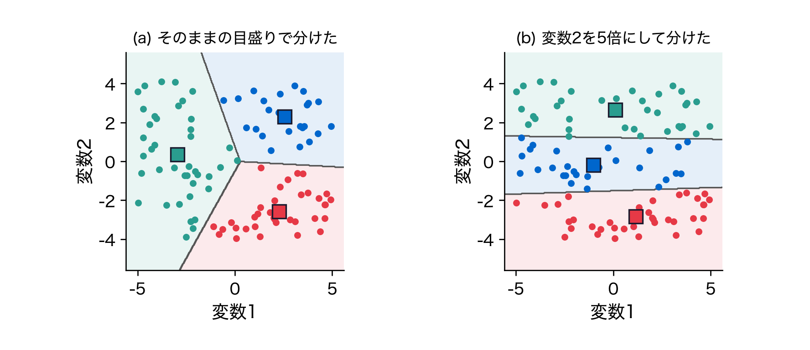
同じ点でも、変数2を5倍にすると横に切る答えになる。目盛りの大きい列が J を占める。
帰結⑭：比で測るなら対数
\log a-\log b=\log\frac{a}{b}
コーヒー豆100gと200g、1kgと2kg。差は100gと1kgで違うが、どちらも2倍。対数にすると差はどちらも \log2。
帰結⑮：主成分分析と並べる
| 主成分分析（第9・10回） | k-means（今回） | |
|---|---|---|
| 近似 | \mathbf F\mathbf A^\top（\mathbf F は連続） | \mathbf G\mathbf C（\mathbf G は0/1） |
| 片方を固定した更新 | \hat{\mathbf F}=\mathbf X\mathbf A、\hat{\mathbf A}=\mathbf K\mathbf L^\top | \hat{\mathbf G}：最も近い代表点、\hat{\mathbf C}=(\mathbf G^\top\mathbf G)^{-1}\mathbf G^\top\mathbf X |
| J | 毎回下がる | 毎回下がり、有限回で止まる |
| 着く先 | どの初期値でも同じ J | 初期値しだい（局所解） |
| 1回で解けるか | 特異値分解1回（第10回） | 解けない。ランダムスタート |
| 決まらないもの | 軸の回転 \mathbf R | 群の番号の付け替え（第8回） |
位置づけ：地図のk-meansの行
| モデル | 近似する相手 | 目的関数 | 解き方 | 回 |
|---|---|---|---|---|
| 線形回帰 | y | \lVert\boldsymbol y-\mathbf X\boldsymbol\beta\rVert_2^2 | 正規方程式を1回解く | 第1回 |
| 主成分分析 | \mathbf X | \lVert\mathbf X-\mathbf F\mathbf A^\top\rVert_F^2 | 交互に解く／特異値分解を1回 | 第9・10回 |
| k-means | \mathbf X | \lVert\mathbf X-\mathbf G\mathbf C\rVert_F^2 | 交互に解く | 第11回 |
第8回の3つの目的関数のうち、3つ目を解いた。推定法はどれも最小二乗法。
第II部 実データ解析
第II部：実データで試す
- 第I部の人工データは、現象がはっきり出るように作った
- 実データは、理論どおりにいくとは限らない
- 外れたら、その理由を第I部の道具で考える
うまくいったら最高。
理論の予想
- 第I部：J は毎回下がって止まる。止まる先は初期値しだい（局所解）
- 予想：卸売の顧客でも、初期値を変えると着く先が変わるはず
- 予想：人工データ（\theta = 0.64）のように、数回やり直せば最小に着くはず
データ：卸売の顧客
| 行 | ポルトガルの卸売業者の顧客 440 件 |
| \mathbf X | 生鮮・乳製品・食料品・冷凍品・洗剤と紙製品・総菜 の 6 品目の年間購入額 |
| 業態 | 飲食店 298 件・小売 142 件。\mathbf G と \mathbf C を求めるのには使わない |
群の中で近いのは、買い方が似た顧客どうし。そういう群を作りたい。
データ：右に裾が長い
| 品目 | 生鮮 | 乳製品 | 食料品 | 冷凍品 | 洗剤と紙製品 | 総菜 |
|---|---|---|---|---|---|---|
| 中央値 | 8,504 | 3,627 | 4,756 | 1,526 | 816 | 966 |
| 最大 | 112,151 | 73,498 | 92,780 | 60,869 | 40,827 | 47,943 |
| 最大 ÷ 中央値 | 13 | 20 | 20 | 40 | 50 | 50 |
一部の大口の客が中央値の数十倍を買う。品目ごとに金額の桁も違う。
前処理：対数にして標準化
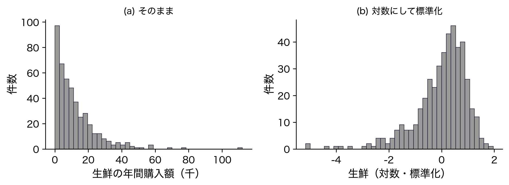
6列を対数にして（何倍かで比べる）、列ごとに標準化した。長い裾が縮み、列の目盛りがそろう。
手続き：何をどう計算したか
- 用意する：6列を対数にし、列ごとに標準化した \mathbf X
- 手順を自分で回す：I-6の手順をNumPyの行列計算で書く
- ランダムスタート：k=2 と k=3 で、初期値を 100 通り（\mathbf X の行から k 行）
- 読む：群ごとの購入額の中央値と、業態との重なり
- 確かめる：k=2 の初期値3通りで、J の推移とscikit-learnのKMeansの答え
- 目盛りを変える：対数も標準化もしない \mathbf X／標準化だけの \mathbf X
確認：Jは毎回下がる
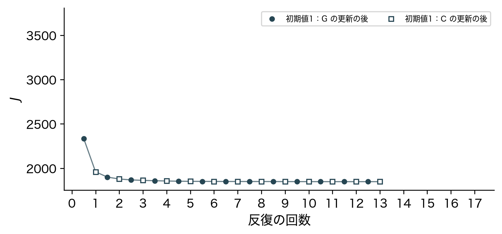
k=2、初期値3通り。どれも 8〜17 回で止まり、J は一度も上がらない。第I部のとおり。
結果①：k=2で100回

初期値を 100 通り変えて回した。着いた J は 4 通り。
結果①：予想は外れた
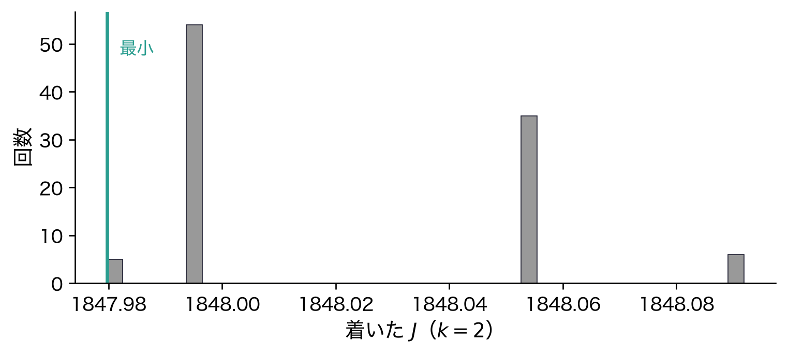
J は 1,847.98〜1,848.09。所属が違う行は 3 件だけ。どこから始めても、ほぼ同じ答え。なぜか。
なぜ：細長い雲を切る
J が最小の答えを、6列のうち2列で描いた。
点の雲は右上へ細長い。境目は、その長い向きを半分に切る。

なぜ：切り方は1通り
雲に隙間はない。それでも2つに切るなら、J を大きく下げる切り方は1通り。
違うのは、境目のそばの 3 件だけ。
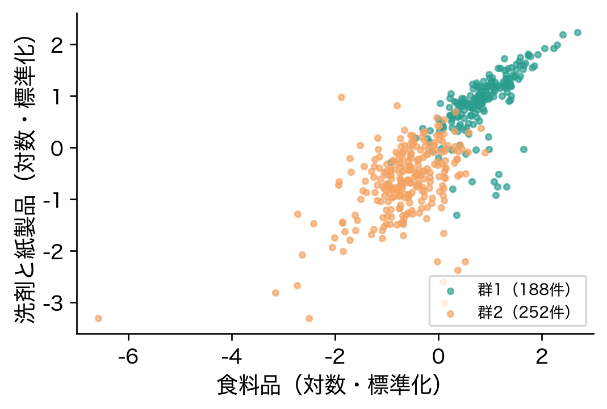
解釈①：2群を購入額で読む
| 群 | 件数 | 生鮮 | 乳製品 | 食料品 | 冷凍品 | 洗剤と紙製品 | 総菜 |
|---|---|---|---|---|---|---|---|
| 群1 | 188 | 5,406 | 7,690 | 11,527 | 1,062 | 4,495 | 1,388 |
| 群2 | 252 | 10,348 | 1,871 | 2,406 | 2,225 | 328 | 750 |
k=2 で J が最小の答え。数字は購入額の中央値。群1は食料品・洗剤を、群2は生鮮・冷凍品を多く買う。
解釈②：業態と重なる
| 群 | 件数 | 生鮮 | 乳製品 | 食料品 | 冷凍品 | 洗剤と紙製品 | 総菜 | 小売の割合 |
|---|---|---|---|---|---|---|---|---|
| 群1 | 188 | 5,406 | 7,690 | 11,527 | 1,062 | 4,495 | 1,388 | 71% |
| 群2 | 252 | 10,348 | 1,871 | 2,406 | 2,225 | 328 | 750 | 3% |
業態は使っていないのに、2群と業態が重なる割合は 85.9%。全員を飲食店とみなすと 67.7%。
結果②：k=3で100回
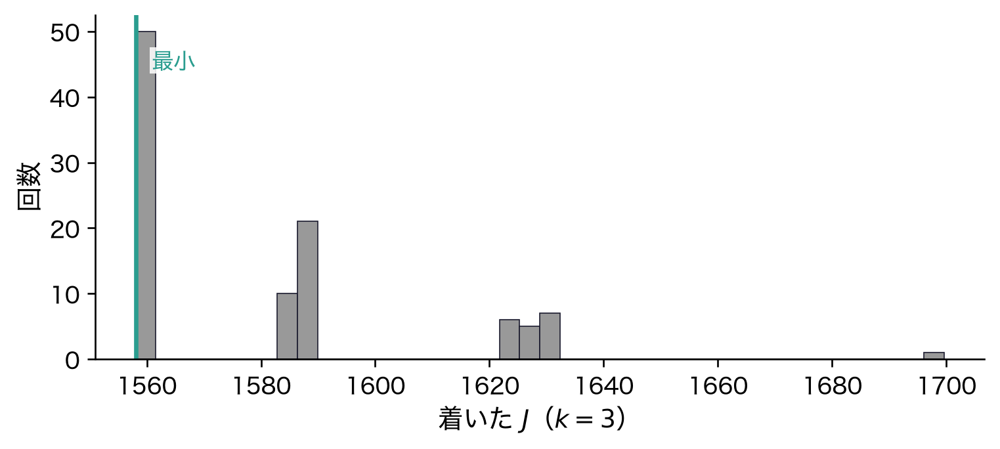
同じ \mathbf X を k=3 に。着いた J は 41 通り。予想どおり、着く先は初期値しだい。
結果②：最小の谷
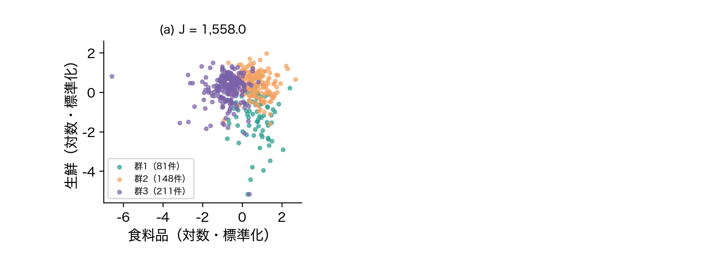
最小の J の答え。描いたのは6列のうち2列。
結果②：最も悪い谷
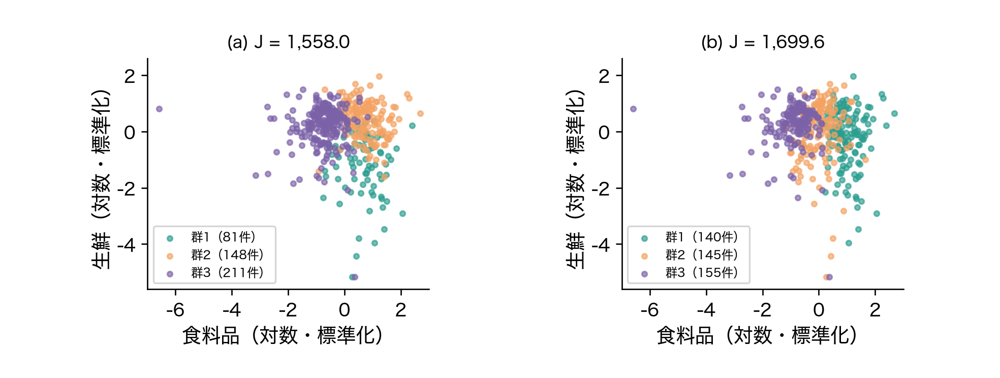
同じ \mathbf X・同じ k で、別の分け方に止まった。どちらも2つの更新式を満たす。
結果②：何回やり直すか
| 初期値の数 R | 1 | 10 | 50 | 100 |
|---|---|---|---|---|
| 最小の谷に1回は着く見込み | 3.0% | 26.3% | 78.2% | 95.2% |
最小に着いたのは 3%。第I部の 1-(1-\theta)^R に \theta = 0.03 を入れた。数回では足りない。予想は外れた。
なぜθが小さいか

最小から1%以内だけを拡大した。16 つの谷が並び、J の差は 0.04%以内。ここに 50%が着いた。
なぜ：境目のそばの数件
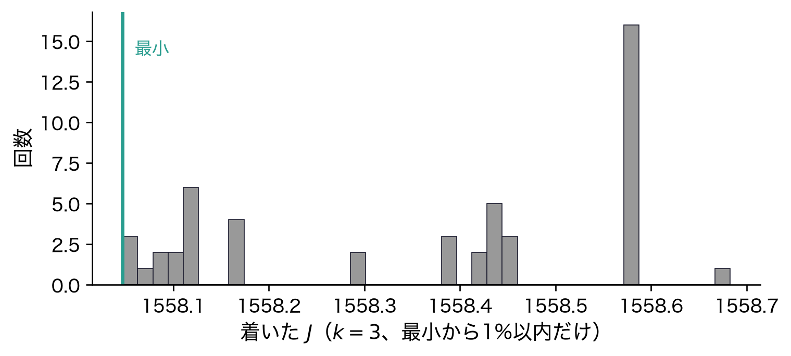
その谷は、最小の答えと 1〜9 件の所属が違うだけ。境目のそばの数件を入れ替えても、止まる点になる。
落とし穴①：そのままの購入額
- 対数も標準化もせず、平均を引いただけの購入額を \mathbf X にする
- k=2、初期値20通りで J が最小の答え
- 比べる相手は、対数にして標準化した \mathbf X の答え
落とし穴①：Jの内訳
| k=2 の答え | 対数にして標準化 | 平均を引いただけ |
|---|---|---|
| \lVert\mathbf X\rVert_F^2 のうち生鮮の列の割合 | 16.7% | 44.6% |
| \lVert\mathbf X\rVert_F^2 のうち総菜の列の割合 | 16.7% | 2.2% |
| J のうち生鮮・食料品の2列の割合 | 33.0% | 59.8% |
| 群の件数 | 252・188 | 375・65 |
| 業態と重なる割合 | 85.9% | 59.3% |
第I部の帰結のとおり、J は列ごとの和。金額の大きい列が J を占め、群は業態とほぼ重ならない。
落とし穴②：標準化だけ
- 対数はとらず、列ごとに標準化だけした \mathbf X にする
- 列の散らばりはそろうが、右に長い裾は残る
- k を3から5まで変え、初期値50通りで J が最小の答えを見る
落とし穴②：大口の1件が1群
| 最も小さい群の件数 | 対数にして標準化 | 標準化だけ |
|---|---|---|
| k=3 | 81 | 2 |
| k=4 | 61 | 4 |
| k=5 | 54 | 1 |
標準化だけでは、k=5 で1件だけの群ができる。総菜が平均から標準偏差の 16.5 倍離れた客。
このデータでわかったこと
- 予想は外れた：k=2 ではほぼ1つの谷。細長い雲を切る場所は1通り
- 予想どおり：k=3 では、着く先が 41 通りに分かれた
- 予想は外れた：\theta = 0.03。最小のそばに、数件だけ違う谷が並ぶ
- 目盛りをそろえないと、金額の大きい列で群が決まる
締め
まとめ①：交互に解く

\lVert\mathbf X-\mathbf G\mathbf C\rVert_F^2 を、最も近い代表点（\mathbf G）と群の平均（\mathbf C）で交互に下げる。
まとめ②：着く先は初期値しだい

J は毎回下がるが、局所解に止まることがある。やり直して J 最小を採る（ランダムスタート）。
まとめ③：目盛りは用意する側

J は列ごとの和。どの列をどれだけ重く見るかは、\mathbf X を用意する側が決める。
次回予告①：0か1で切る
- \mathbf G の各行は0か1：境目のすぐそばの個体も、100%どちらか
- 境目は代表点の垂直二等分線：群の形や広がりは見ていない
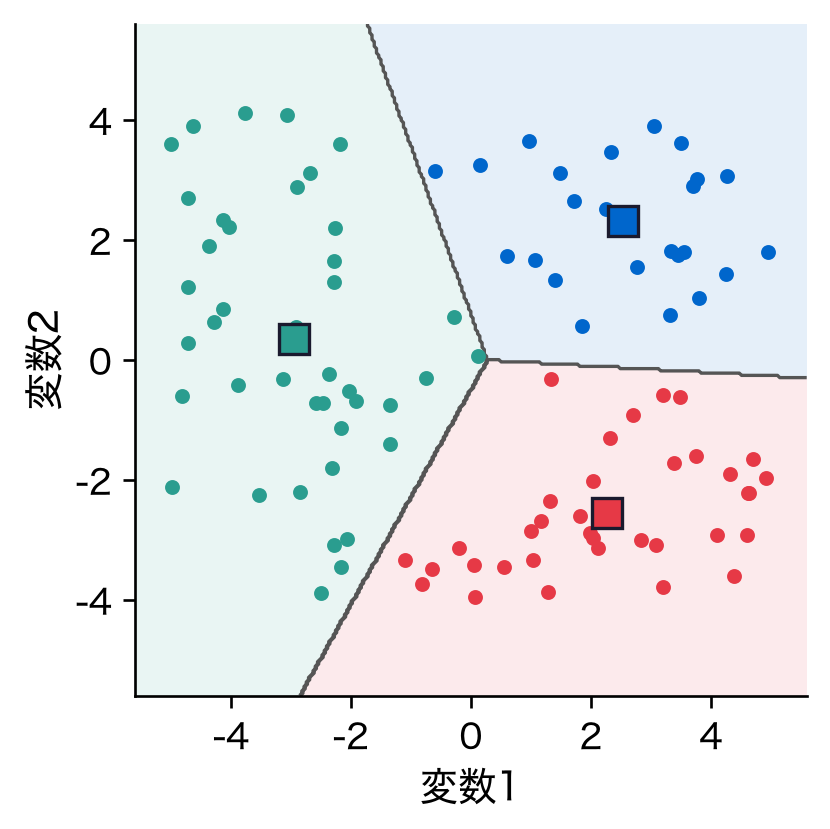
次回予告②：最尤法で
| 最小二乗法 | 最尤法 | |
|---|---|---|
| y を近似する | 第1回（線形回帰）・第5回（0/1回帰） | 第6回（LDA・ロジスティック回帰） |
| 行を群に分ける | 第11回（k-means） | ？ |
問い：同じ群を最尤法で推定すると？